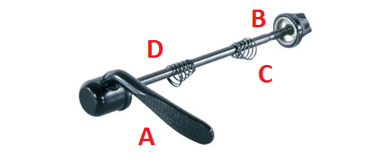

Notice de montage du vélo
Déballage du carton d’expédition
Ouvrez le carton d’envoi spécial et enlevez la sécurité de
transport rectangulaire en carton placée sur la roue arrière
Sortez d’abord la roue, la selle et enfin le cadre sur lequel la
roue arrière est déjà montée
Sortez le paquet d’accessoires
Préparation de la roue avant
Enlevez les deux protections en plastique placées sur le moyeu
de la roue
Ouvrez le paquet d’accessoires et sortez-en le système de
serrage rapide

Desserrez l’écrou de serrage (B) du serrage rapide et enlevez
le ressort à boudin (C)
Placez la tige filetée du serrage rapide avec le ressort à boudin
(D) dans l’axe du moyeu
Placez de l’autre côté le deuxième ressort à boudin (C) sur
la tige filetée du serrage rapide et vissez légèrement l’écrou de
serrage (B)
Montage de la roue avant
Quand vous avez préparé la roue avant pour la monter sur la
fourche, procédez de la façon suivante, en fonction du type de
freins:
Remarque :Quand vous montez la roue avant, faites-vous aider
si possible par une deuxième personne ou utilisez un support de
montage.
Enlevez d’abord la sécurité de transport en plastique placée
sur les pattes de fourche (Img. 5)
 Soulevez d’une main le vélo de course en l’attrapant par la
potence
Ouvrez le levier d’ajustage de manière qu’il soit tourné vers le
haut (Img. 6)
Montez la roue avant dans le sens de la marche
Soulevez d’une main le vélo de course en l’attrapant par la
potence
Ouvrez le levier d’ajustage de manière qu’il soit tourné vers le
haut (Img. 6)
Montez la roue avant dans le sens de la marche

 Fixez le serrage rapide au moyeu de la roue avant – vous
trouverez plus d’information sur ce sujet au point IV
Après le montage de la roue, fermez le levier d’ajustage
du frein à tirage latéral de manière qu’il soit tourné vers le bas
(Img. 7)
Fixez le serrage rapide au moyeu de la roue avant – vous
trouverez plus d’information sur ce sujet au point IV
Après le montage de la roue, fermez le levier d’ajustage
du frein à tirage latéral de manière qu’il soit tourné vers le bas
(Img. 7)
Remarque: Quand vous montez la roue avant, veillez à ce
que les pattes de fourche reposent complètement sur l’axe du
moyeu!
Attention: Vérifiez que la roue avant tourne librement. Si la
roue tourne de façon irrégulière ou que le frein frotte nettement,
la roue avant n’a pas été montée correctement!
Soulevez d’une main le cyclo-cross en l’attrapant par la
potence
Montez la roue avant dans le sens de la marche
Fixez le serrage rapide au moyeu de la roue avant – vous
trouverez plus d’information sur ce sujet au point IV
Remarque: Quand vous montez la roue avant, veillez à ce
que les pattes de fourche reposent complètement sur l’axe du
moyeu!
Accrochez maintenant le frein Cantilever en pressant d’une
main les deux bras du frein de manière que les plaquettes de
frein reposent à plat sur le flanc de la jante (Img. 8)
Avec l’autre main, tirez maintenant le câble en direction du
bras de frein droit, de manière à pouvoir accrocher l’embout du
câble dans le bras du frein (Img. 9)

Attention: Vérifiez que la roue avant tourne librement. Si la
roue tourne de façon irrégulière ou que le frein frotte nettement,
la roue avant n’a pas été montée correctement!
Fixation de la roue avant sur la fourche
Fermez le serrage rapide en faisant basculer le levier de 180°
(Img. 10 et 11)Si le serrage rapide a été bien fermé, on doit
toujours voir l’inscription « Close » sur la partie extérieure du
levier!
Attention: Veillez à ce que toutes les vis d’arrêt de la potence
aient un couple de serrage régulier. L’écart du collier de la
potence dit être identique. Sinon, vous risquez d’avoir un grave
défaut de matériau au guidon!
Attention: La résistance du mouvement de fermeture du levier
de serrage rapide (A) doit augmenter nettement à environ la
moitié de la course du levier.
Si ce n’est pas le cas, vous devez augmenter la précontrainte à
l’aide de l’écrou de serrage (B) placé du côté opposé du moyeu!
(voir page 2, Img. 2)
Réglage du guidon
Utilisez l’outil multifonctions
Choisissez la clé à six pans adaptée pour desserrer les vis de
fixation de la potence au niveau du guidon (Img. 12)
Quand vous avez trouvé le réglage qui vous convient,
resserrez diagonalement les vis d’arrêt placées à l’avant
Fixez le guidon selon les réglages qui vous conviennent. Veillez
toujours à ce que le guidon soit bien symétrique par rapport au
collier de la potence (Img. 13)
Attention: Veillez à ce que toutes les vis d’arrêt de la potence
aient un couple de serrage régulier. L’écart du collier de la
potence dit être identique. Sinon, vous risquez d’avoir un grave
défaut de matériau au guidon!
Montage de la selle
Utilisez l’outil multifonctions joint à la livraison
Mettez la tige de selle dans le tube de selle et réglez
la selle à la hauteur désirée (Img. 14) 

Attention: N’oubliez pas qu’en réglant la hauteur de la
selle à votre taille vous ne devez pas tirer la tige de selle
au-delà d’une hauteur maximale! Le non respect de cette
consigne pourrait provoquer des dégâts matériels ou des
accidents graves. (Img. 15)
Montage des pédales
Sortez les deux pédales du carton d’accessoires, si
elles sont comprises dans la livraison
Repérez la pédale droite et vissez-la sur le bras de manivelle
dans le sens des aiguilles d’une montre (Img. 16)
Vissez ensuite la pédale gauche sur le bras de manivelle
gauche, mais dans le sens contraire des aiguilles d’une montre
Serrez fortement les deux pédales à l’aide d’une clé plate de
15 et vérifiez à nouveau la bonne position des pédales quand
vous avez fait quelques kilomètres (Img. 17)
Essai du vélo
Remarque: Dans votre propre intérêt, nous vous conseillons
de faire faire une première inspection au bout d’environ 100
kilomètres. Les vélos ne peuvent pas toujours être réglés
parfaitement sans une certaine période de rodage.
Les composants mécaniques tels que les freins, le changement
de vitesse ou les pédaliers doivent être vérifiés et réajustés
encore une fois au bout d’un certain temps. Une première
inspection effectuée par un spécialiste est pour vous la
garantie d’avoir un vélo que vous garderez longtemps et qui
vous procurera un plaisir infini.
Remarque: Prenez soin de noter le numéro de votre cadre! Le
numéro du cadre se trouve généralement à proximité du pédalier
– mais suivant le fabricant la position peut être différente (tube
de selle, tube de direction). Nous vous conseillons